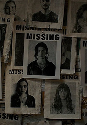
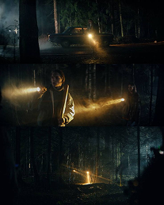
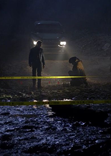
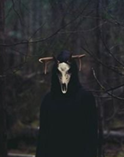

Маленьке містечко Вулфкрік, загублене серед густих лісів штату Мен, завжди було тихим і спокійним — до 15 жовтня 1985 року.
ДЕТЕКТИВНА НАСТІЛЬНА ІГРА
Маленьке містечко Вулфкрік, загублене серед густих лісів штату Мен, завжди було тихим і спокійним — до 15 жовтня 1985 року.

У ту ніч місцевий історик Едвард Кроу, відомий своєю одержимістю стародавніми легендами, зник безвісти.

Його будинок знайшли порожнім, але з явними слідами боротьби: розбиті меблі, кров на підлозі.

Через тиждень у лісі неподалік виявили тіло Едварда, але причина смерті залишилася загадкою. Експертиза показала, що його серце зупинилося без видимих причин.

Місцеві шепталися про стару легенду — про Тінь Вулфкріка, древню сутність, яка, за переказами, прокидається кожні 30 років, щоб забрати нову жертву.

Ви — команда детективів з бюро спеціальних розслідувань, яких викликали до Вулфкріка, щоб розкрити справу. Але час спливає: з моменту смерті Едварда минуло 3 дні.
справу передано вам
ваша задача — використовуючи логіку, інтуїцію та дедукцію, розкрити таємницю справи